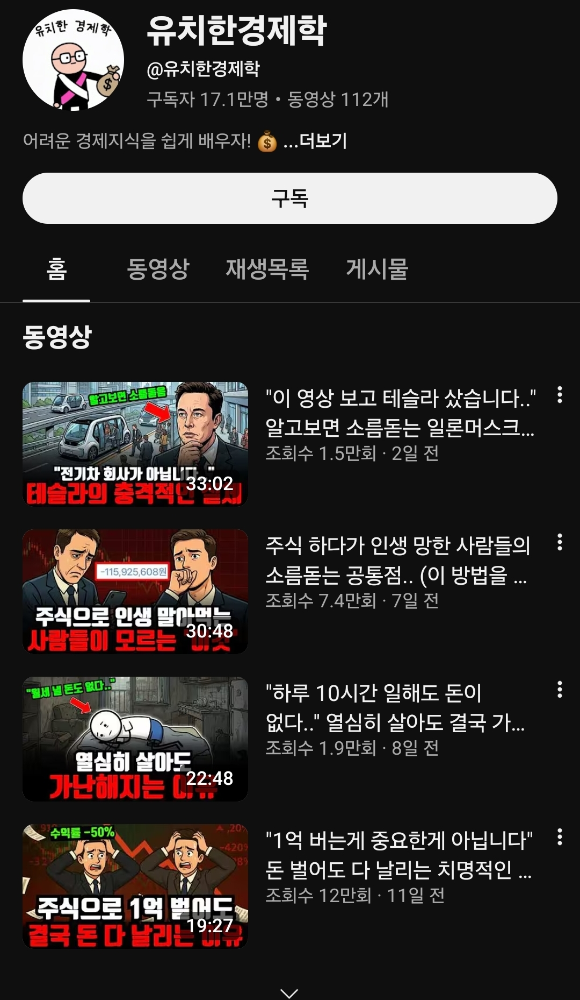
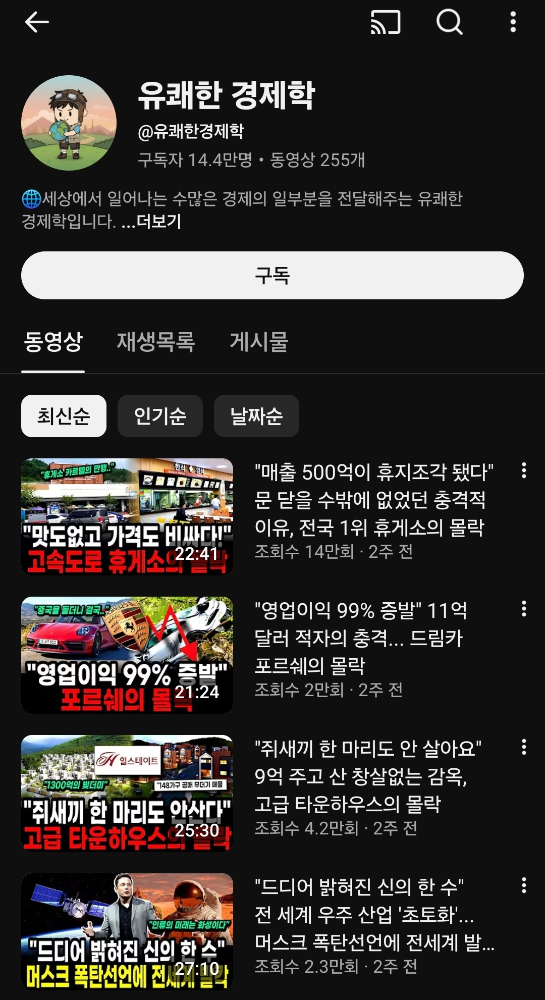
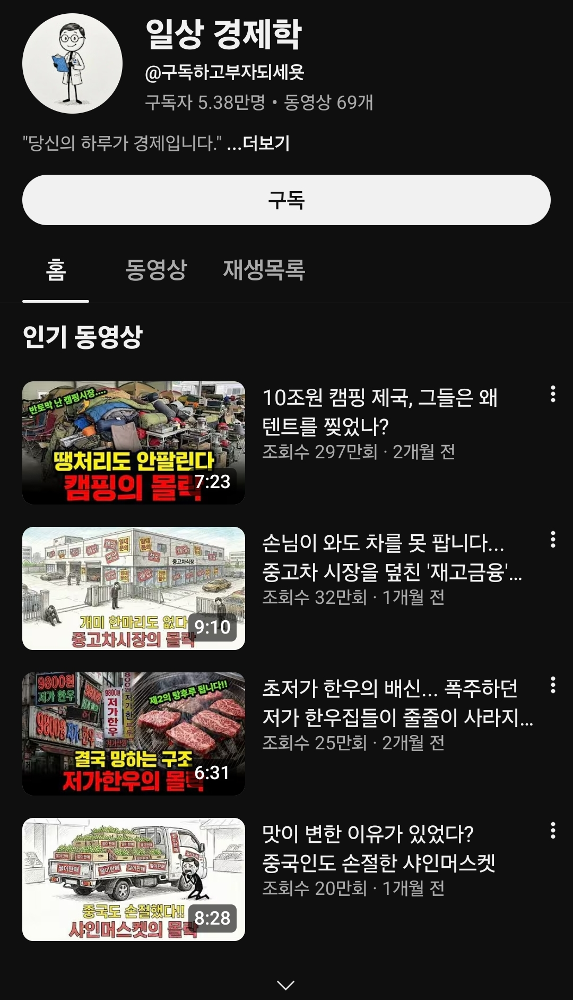
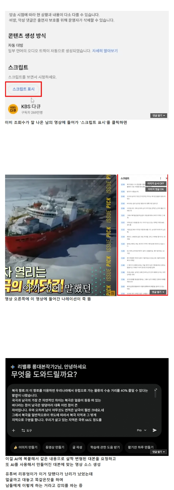
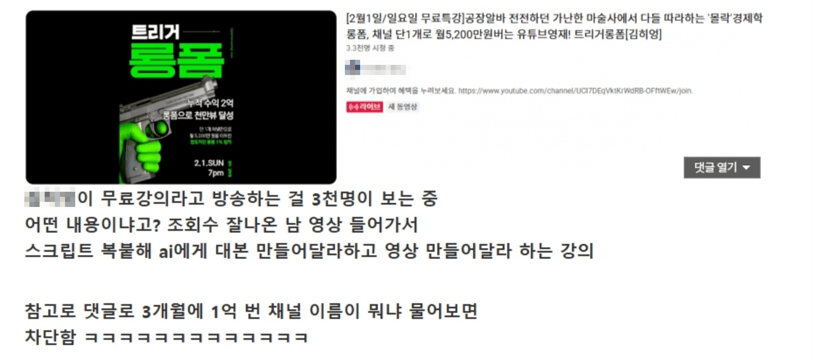

대충 이렇게 무슨무슨 경제학이라는 제목에
AI슬롭 썸네일과 어그로끄는 제목으로 알고리즘에 뜨는 ㅈ같은 양산형 채널들


그 실체는 경제학 1도 모르는 앰생백수들이
남의 영상과 자료 도둑질한걸로 AI 딸깍해서 찍어내는 쓰레기 영상들
심지어 저런거 찍어내서 돈버는 방법이랍시고 강의팔이까지 하고 있음
정작 저딴 사기꾼들 단속해야 할 유튜브 운영진은
저런건 안잡고 애꿎은 먹방같은 거나 때려잡는 상황
에이아이 시대 중요한건 병신정보 거르는 능력임